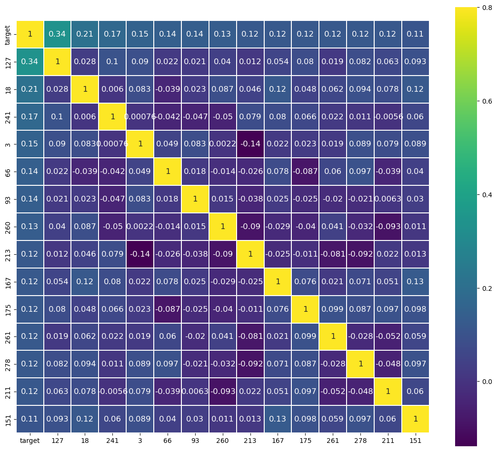

import time
import numpy as np
import pandas as pd
import seaborn as sns
import matplotlib.pyplot as plt
sample_submission = pd.read_csv('C:\\Users\\Estrela\\Desktop\\\Mestrado\\Treino\\dont-overfit-ii\\sample_submission.csv')
test_1 = pd.read_csv('C:\\Users\\Estrela\\Desktop\\\Mestrado\\Treino\\dont-overfit-ii\\test_1.csv')
test_2 = pd.read_csv('C:\\Users\\Estrela\\Desktop\\\Mestrado\\Treino\\dont-overfit-ii\\test_2.csv')
test = pd.concat([test_1, test_2])
train = pd.read_csv('C:\\Users\\Estrela\\Desktop\\Mestrado\\Treino\\dont-overfit-ii\\train.csv')Configuração de Dados
Analise de Dados
train.head(5)| id | target | 0 | 1 | 2 | 3 | 4 | 5 | 6 | 7 | ... | 290 | 291 | 292 | 293 | 294 | 295 | 296 | 297 | 298 | 299 | |
|---|---|---|---|---|---|---|---|---|---|---|---|---|---|---|---|---|---|---|---|---|---|
| 0 | 0 | 1.0 | -1.067 | -1.114 | -0.616 | 0.376 | 1.090 | 0.467 | -0.422 | 0.460 | ... | 0.220 | -0.339 | 0.254 | -0.179 | 0.352 | 0.125 | 0.347 | 0.436 | 0.958 | -0.824 |
| 1 | 1 | 0.0 | -0.831 | 0.271 | 1.716 | 1.096 | 1.731 | -0.197 | 1.904 | -0.265 | ... | -0.765 | -0.735 | -1.158 | 2.554 | 0.856 | -1.506 | 0.462 | -0.029 | -1.932 | -0.343 |
| 2 | 2 | 0.0 | 0.099 | 1.390 | -0.732 | -1.065 | 0.005 | -0.081 | -1.450 | 0.317 | ... | -1.311 | 0.799 | -1.001 | 1.544 | 0.575 | -0.309 | -0.339 | -0.148 | -0.646 | 0.725 |
| 3 | 3 | 1.0 | -0.989 | -0.916 | -1.343 | 0.145 | 0.543 | 0.636 | 1.127 | 0.189 | ... | -1.370 | 1.093 | 0.596 | -0.589 | -0.649 | -0.163 | -0.958 | -1.081 | 0.805 | 3.401 |
| 4 | 4 | 0.0 | 0.811 | -1.509 | 0.522 | -0.360 | -0.220 | -0.959 | 0.334 | -0.566 | ... | -0.178 | 0.718 | -1.017 | 1.249 | -0.596 | -0.445 | 1.751 | 1.442 | -0.393 | -0.643 |
5 rows × 302 columns
# Quantificação do target
train['target'].value_counts()0.0 183
1.0 67
Name: target, dtype: int64# Quantidade de nulos
train.isna().any().any()False# Testando quais colunas estão mais correlacionadas com o resultado, para separá-las de forma decrescente
# e treiná-las, evitando assim overfitting
train.corr()['target'].sort_values(ascending=False)target 1.000000
127 0.337540
18 0.206452
241 0.173879
3 0.153317
...
126 -0.167064
16 -0.179796
135 -0.179960
59 -0.203166
176 -0.217100
Name: target, Length: 302, dtype: float64# 14 primeiras colunas com maiores correlação ao 'target'
train.corr().nlargest(15, 'target')['target'].indexIndex(['target', '127', '18', '241', '3', '66', '93', '260', '213', '167',
'175', '261', '278', '211', '151'],
dtype='object')f , ax = plt.subplots(figsize = (14,12))
sns.heatmap(np.corrcoef(train[train.corr().nlargest(15, 'target')['target'].index].values.T),
vmax=.8,
linewidths=0.01,
square=True,
annot=True,
cmap='viridis',
linecolor="white",
xticklabels = train.corr().nlargest(15, 'target')['target'].index.values,
annot_kws = {'size':12},
yticklabels = train.corr().nlargest(15, 'target')['target'].index.values)
Teste de Acurácia para Treinamentos
# Separando melhores colunas em novos data frames
df_train_x = train[list(train.corr().nlargest(15, 'target')['target'].index)[1:]]
df_train_y = train['target']
df_test_x = test[list(train.corr().nlargest(15, 'target')['target'].index)[1:]]# Normalizando dados
'''
O objetivo do MinMaxScaler é normalizar ou redimensionar as características (ou variáveis)
contínuas para um intervalo específico, como 0 e 1. Isso é feito para melhorar o desempenho
dos algoritmos de aprendizado de máquina, que muitas vezes funcionam melhor quando as carac
terísticas estão na mesma escala.
'''
from sklearn.preprocessing import MinMaxScaler
# Dados de exemplo
data = df_train_x.columns
# Criar um objeto MinMaxScaler
scaler = MinMaxScaler()
# Ajustar e transformar os dados
data_scaled = scaler.fit_transform(df_train_x)
# Transformando dados normalizados em data frame
scaled_df_train_x = pd.DataFrame(data_scaled, columns=data)
scaled_df_train_x.head(5)| 127 | 18 | 241 | 3 | 66 | 93 | 260 | 213 | 167 | 175 | 261 | 278 | 211 | 151 | |
|---|---|---|---|---|---|---|---|---|---|---|---|---|---|---|
| 0 | 0.795947 | 0.421700 | 0.550931 | 0.596574 | 0.589857 | 0.922965 | 0.501684 | 0.637804 | 0.410788 | 0.619153 | 0.658881 | 0.561672 | 0.366523 | 0.619055 |
| 1 | 0.751492 | 0.263822 | 0.639913 | 0.727770 | 0.459745 | 0.836144 | 0.585419 | 0.417918 | 0.210433 | 0.232599 | 0.225508 | 0.427318 | 0.227919 | 0.514652 |
| 2 | 0.551367 | 0.583094 | 0.648236 | 0.334001 | 0.261336 | 0.502603 | 0.257942 | 0.265599 | 0.333136 | 0.638497 | 0.338262 | 0.628247 | 0.217830 | 0.102642 |
| 3 | 0.677034 | 0.351230 | 0.223345 | 0.554483 | 0.461595 | 0.793879 | 0.495242 | 0.319486 | 0.357834 | 0.160774 | 0.663922 | 0.811113 | 0.441118 | 0.643875 |
| 4 | 0.420829 | 0.566155 | 0.249306 | 0.462464 | 0.618730 | 0.555278 | 0.535354 | 0.465799 | 0.295594 | 0.392738 | 0.394892 | 0.489936 | 0.724115 | 0.516093 |
# Preparando dados para testar precisão do treinamento
from sklearn.model_selection import train_test_split
x_train, x_test, y_train, y_test = train_test_split(scaled_df_train_x, df_train_y, test_size=0.2, random_state=42)# Definindo diferentes métodos de treinamento de máquina para escolher o melhor
import xgboost as xgb
from lightgbm import LGBMClassifier
from sklearn.ensemble import RandomForestClassifier
from sklearn.ensemble import IsolationForest
from sklearn.linear_model import LogisticRegression
from sklearn.neighbors import KNeighborsClassifier
from sklearn.svm import SVC
# Definindo biblioteca para calcular acurácia dos dados de treino
from sklearn.metrics import accuracy_score
# Definindo função de treinamento
def treinamento_de_modelos(modelo, x_t, y_t, x_tt, y_tt, resultado):
inicio = time.time()
# Treinando
modelo.fit(x_t, y_t)
# Prevendo
y_pred = modelo.predict(x_tt)
fim = time.time()
# Resultados
print(f'Modelo de treino: {str(modelo)}')
if y_tt is not None:
print(f'Acurácia: {accuracy_score(y_tt, y_pred)}')
print(f'Tempo de Processamento: {fim - inicio:.4f}s')
if resultado == 1:
return y_pred# Definindo modelos de ML
models = [xgb.XGBClassifier(),
LGBMClassifier(verbose=-1),
RandomForestClassifier(),
IsolationForest(n_jobs=-1),
LogisticRegression(),
KNeighborsClassifier(),
SVC()]
# Treinando modelos
for model in models:
# Treinando modelos
treinamento_de_modelos(model, x_train, y_train, x_test, y_test, 0)
if str(model) != 'SVC()':
print('')Modelo de treino: XGBClassifier(base_score=None, booster=None, callbacks=None,
colsample_bylevel=None, colsample_bynode=None,
colsample_bytree=None, early_stopping_rounds=None,
enable_categorical=False, eval_metric=None, feature_types=None,
gamma=None, gpu_id=None, grow_policy=None, importance_type=None,
interaction_constraints=None, learning_rate=None, max_bin=None,
max_cat_threshold=None, max_cat_to_onehot=None,
max_delta_step=None, max_depth=None, max_leaves=None,
min_child_weight=None, missing=nan, monotone_constraints=None,
n_estimators=100, n_jobs=None, num_parallel_tree=None,
predictor=None, random_state=None, ...)
Acurácia: 0.82
Tempo de Processamento: 0.0370s
Modelo de treino: LGBMClassifier(verbose=-1)
Acurácia: 0.84
Tempo de Processamento: 0.1200s
Modelo de treino: RandomForestClassifier()
Acurácia: 0.84
Tempo de Processamento: 0.2310s
Modelo de treino: IsolationForest(n_jobs=-1)
Acurácia: 0.18
Tempo de Processamento: 0.1710s
Modelo de treino: LogisticRegression()
Acurácia: 0.84
Tempo de Processamento: 0.0070s
Modelo de treino: KNeighborsClassifier()
Acurácia: 0.72
Tempo de Processamento: 0.0050s
Modelo de treino: SVC()
Acurácia: 0.8
Tempo de Processamento: 0.0060sTreinamento de Máquina
'''
Como o modelo de regressão logística foi o que obteve melhor desempenho, será ele o usado p
ara treinar os dados.
'''
# Treinando
resultados = treinamento_de_modelos(LogisticRegression(), df_train_x, df_train_y, df_test_x, None, 1)
# Criando DataFrame
df_resultados = pd.DataFrame({'id': test['id'], 'target': resultados})
# Mudando index
df_resultados.set_index('id', inplace=True)Modelo de treino: LogisticRegression()
Tempo de Processamento: 0.0070sdf_resultados| target | |
|---|---|
| id | |
| 250 | 0.0 |
| 251 | 0.0 |
| 252 | 0.0 |
| 253 | 1.0 |
| 254 | 1.0 |
| ... | ... |
| 19995 | 0.0 |
| 19996 | 0.0 |
| 19997 | 0.0 |
| 19998 | 0.0 |
| 19999 | 0.0 |
19750 rows × 1 columns
Exportação de Resultados
df_resultados.to_csv('C:\\Users\\Estrela\\Desktop\\doii.csv', header=True)